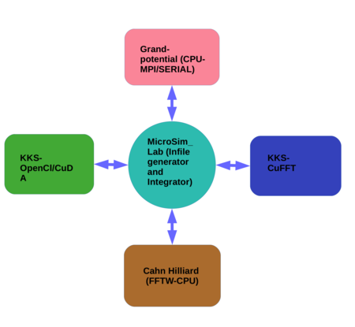
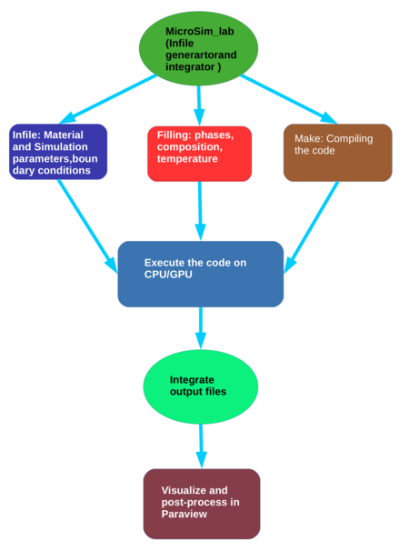

1. Introduction
MicroSim short for Microstructural Simulator is a software stack consisting
of phase-field codes based on differing discretization strategies (finite difference,
finite volume and Fast Fourier transform) along with implementation on varied
high-performance computing infrastructure such as MPI(CPU), CUDA(GPU)
and OpenCl(GPU). The motivation for the creation of this software stack is to
provide the academic and industrial user base a open-source software framework
that can be utilized readily or with minimal modifications for routine problems
relating to phase transformations during materials processing. The present release is the first among many of our software stack that will be presently be able
to address phase transformations such as solidification and precipitation.
2. Generic structure of the stack
The software stack is described in Figure below. A brief description of the modules follows:

Grand-potential based solver:
This is a multi-phase multicomponent
phase-field solver based on a regular-grid finite-difference discretization,
with a simple Euler forward time marching scheme. It is based on the
phase-field model presented in Phys. Rev. E 85, 021602 (2012). Two
versions of the solver are available, one which is a serial code that runs on
the CPU and the second that is parallelized using a simple block domain-
decomposition using MPI. Presently, these solvers are discretized in 2D
and future releases will contain more features as well as domain discretization in 3D. A dedicated module related to its usage can be found in the
solver folders.
Kim Kim Suzuki(KKS) based model (OpenCl):
This is a multi-component based solver that is based on the Kim Kim Suzuki model which
uses a finite difference discretization with explicit time stepping. The code
utilizes the OpenCl based framework for utilizing both CPU and GPU
infrastructure. The solver allows for parsing in a .tdb file for reading in
the thermodynamic information directly into the phase-field formulation.
Presently the code has been implemented for 2D and future releases will contain more features as well as the more generic 3D solver. A dedicated
module related to its usage can be found in the solver folders.
Kim Kim Suzuki(KKS) based model (CUDA):
This is a binary alloy solver that is based on the Kim Kim Suzuki model and utilizes the
Fourier transform for the solution of PDEs by leveraging the CuFFT libraries as part of CUDA. The solver is meant for utilizing the NVIDIA
GPU graphic cards particularly the Tesla-P100 and later cards. Because
of the Fourier transform discretization this solver module has by default
periodic boundary conditions. The code can be utilized for both 2D and
3D geometries and is presently written for utilizing single GPU cards.
Later versions of the code will be extended for the treatment of multiple
phases and components as well as parallelization on multiple GPUs. A
dedicated module related to its usage can be found in the solver folders.
Cahn-Hilliard model (FFTW):
This is a binary alloy solver that is
based on the Cahn-Hilliard formulation and utilizes the Fourier transform based solution of PDEs by leveraging the FFTW3 libraries. The
solver runs on single CPUs and it is meant for quick solutions to problems
in smaller domains. Because of the Fourier transform discretization this
solver module has by default periodic boundary conditions. The present
solver is programmed for 2D domains that will be generalized for 3D do-
mains in future releases. Along with this, the solver will also be extended
for simulating multicomponent and multi-phase systems. A dedicated
module related to its usage can be found in the solver folders.
MicroSim GUI:
MicroSim GUI is a Python interface that allows the user
to create the input files and choose the solver of his choice for the execution. It integrates the preceding modules that are a result of in-house
phase-field code development. The interface also allows for a direct call to
the visualization software Paraview enabling the user to view the results
of the simulation. MicroSim GUI comes with Post-processing tools such as dendrite tip radius, front velocity, front undercooling, precipitate size, precipitate count, volume fraction, surface area, triple point calculator etc.
OpenFoam based solvers:
Along with the preceding softwares that are
a result of home-grown codes that have been integrated over the years,
the software stack will also contain the Finite Volume based modules that
are utilize the OpenFoam multiphysics platform. These will utilize the
already developed interfaces as part of OpenFoam and the modules that
will be shared as part of this software stack will contain an independent
documentation of the module and its usage. Presently, a single-phase
binary alloy solidification module that is based on the Grand-potential
based formulation and utilizes adaptive mesh refinement will be part of
this release. Future release will contain modules for two-phase eutectic
growth. Since the modules utilize the OpenFoam framework, they are
generic solvers for both 2D and 3D domains.
3. Process flow
In the following we describe briefly the workflow for getting the user ready with
his/her simulation, which is schematically described in Figure.

The MicroSimGUI interface allows one to gain experience in using the software by enabling navigation through the parameter set required for the solvers for their execution.
The interface can be utilized for the generation of the “Infile” that details the
important parameters that are needed for a particular solver along with the
boundary conditions as well as the information of the initialization of the domain. The experienced user will be able to modify the Input and Filling files
manually while the early users are encouraged to utilize the interface to gain
familiarity with the different solvers and their input parameters. The interface
can also be utilized as quick check for the parameters in the Input files as it
enables one to run and visualize the simulation results in a single workflow. For
the experienced user who makes a change to the original codes can also make
use of the interface for compiling his codes readily.
4. Visualization and File types
Paraview is the default visualization software for the simulation results as well as
associated post-processing. All the output files are written in a ”DATA” folder
in the execution directory. The files are written in .vtk format, ASCII/BINARY depending on the user specification in the Infile for the serial or single
GPU codes. For the MPI-based solvers (Grand-potential based solver(MPI))
the file formats are .vtk(ASCII) or .h5. For the MPI based solvers the .h5 files
are reconstructed into .xml format for viewing in paraview, while a built-in exe-
cutable ./reconstruct is utilized for reconstruction of .vtk(ASCII) files. Detailed
description of the execution commands may be found in the individual manuals
present in the solver folders.
 MicroSim
MicroSim